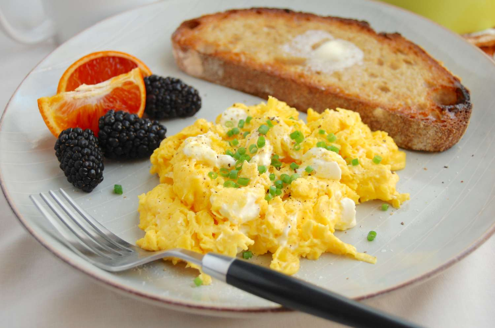

Eggs Fruit & Toast
Scroll down

Desription
Eggs Fruit and Toast is a great quick and nutritional breakfast to start your day usually paired with a cup of coffee
Ingredients
- Eggs
- Fruit
- Toast
- Butter
- Salt
Steps
- Crack however many eggs you would like into a bowl
- Add a pinch of salt and stir
- Cover a pan with butter and pour on pan
- Stick the toast in the toaster
- Scramble your eggs as their cooking
- Take the toast out of the toaster and put it on the plate
- Pour the scrambled eggs on the plate
- Wash your choice of fruit in the sink
- Place fruit on plate and company the meal with whatever condamints you would like